classSolution: defpermute(self, nums: List[int]) -> List[List[int]]: ifnot nums: return [] defback_track(nums,index): if index==len(nums): res.append(p[:])#必须加这个:，因为path之后还会变 return for num in nums: if num notin p: p.append(num) back_track(nums,index+1) p.pop()
classSolution: #入口 defexist(self, board: List[List[str]], word: str) -> bool: #从board[startx][starty]开始，寻找word[index...len(word)] defsearchWord(board,word,index,startx,starty): if index==len(word)-1: return board[startx][starty]==word[index] if board[startx][starty]==word[index]: visited[startx][starty]=True #从startx,starty出发，向四个方向寻找 for i inrange(4): newx=startx+d[i][0] newy=starty+d[i][1] if self.inArea(newx,newy,n,m) andnot visited[newx][newy]: if searchWord(board,word,index+1,newx,newy): returnTrue visited[startx][starty]=False else: returnFalse
d=[[-1,0],[0,1],[1,0],[0,-1]] n,m=len(board),len(board[0]) visited = [[Falsefor _ inrange(m)] for _ inrange(n)] for i inrange(n): for j inrange(m): if searchWord(board,word,0,i,j): returnTrue returnFalse #判断来到的新位置是否越界 definArea(self,x,y,n,m): return0<=x<n and0<=y<m
classSolution: #入口 defexist(self, board: List[List[str]], word: str) -> bool: #从board[startx][starty]开始，寻找word[index...len(word)] defsearchWord(board,word,index,startx,starty): if index==len(word)-1: return board[startx][starty]==word[index] if board[startx][starty]==word[index]: visited[startx][starty]=1 #从startx,starty出发，向四个方向寻找 for i inrange(4): newx=startx+d[i][0] newy=starty+d[i][1] if0<=newx<m and0<=newy<n andnot visited[newx][newy]: if searchWord(board,word,index+1,newx,newy): returnTrue visited[startx][starty]=0 else: returnFalse
d=[[-1,0],[0,1],[1,0],[0,-1]] m,n=len(board),len(board[0]) visited = [[0for _ inrange(n)] for _ inrange(m)] for i inrange(m): for j inrange(n): if searchWord(board,word,0,i,j): returnTrue returnFalse
classSolution: #入口 defexist(self, board: List[List[str]], word: str) -> bool: #从board[startx][starty]开始，寻找word[index...len(word)] defsearchWord(board,word,index,startx,starty): if index==len(word)-1: return board[startx][starty]==word[index] if board[startx][starty]==word[index]: #visited[startx][starty]=1 board[startx][starty]='' #从startx,starty出发，向四个方向寻找 for i inrange(4): newx=startx+d[i][0] newy=starty+d[i][1] if self.inArea(newx,newy,m,n): if searchWord(board,word,index+1,newx,newy): returnTrue #visited[startx][starty]=0 board[startx][starty]=word[index] else: returnFalse
d=[[-1,0],[0,1],[1,0],[0,-1]] m,n=len(board),len(board[0]) visited=[[0]*n]*m for i inrange(m): for j inrange(n): if searchWord(board,word,0,i,j): returnTrue returnFalse #判断来到的新位置是否越界 definArea(self,x,y,m,n): return x>=0and x<m and y>=0and y<n
classSolution: defnumIslands(self, grid: List[List[str]]) -> int: m=len(grid) if m==0: return0 n=len(grid[0]) visited=[[False]*n for _ inrange(m)]
defdfs(grid,x,y): visited[x][y]=True for d in [[0,1],[1,0],[0,-1],[-1,0]]: newx=x+d[0] newy=y+d[1] if0<=newx<m and0<=newy<n andnot visited[newx][newy] and grid[newx][newy]=='1' : dfs(grid,newx,newy) return
res=0 for i inrange(m): for j inrange(n): if grid[i][j]=='1'andnot visited[i][j]: res+=1 dfs(grid,i,j) return res
defdfs(grid,x,y): grid[x][y]='0' for d in [[0,1],[1,0],[0,-1],[-1,0]]: newx=x+d[0] newy=y+d[1] if0<=newx<m and0<=newy<n and grid[newx][newy]=='1': dfs(grid,newx,newy) return
res=0 for i inrange(m): for j inrange(n): if grid[i][j]=='1': res+=1 dfs(grid,i,j) return res
classSolution: defsolve(self, board: List[List[str]]) -> None: """ Do not return anything, modify board in-place instead. """ m=len(board) n=len(board[0])
#递归函数：找到四周边界上存在O且与这些O连接着的O,将其改为'#' defdfs(board,x,y): if board[x][y]!='O': return else: board[x][y]='#' for d in [[0,1],[1,0],[0,-1],[-1,0]]: newx=x+d[0] newy=y+d[1] if0<=newx<m and0<=newy<n: dfs(board,newx,newy) #开始行动：找到四周边界上存在O且与这些O连接着的O,将其改为'#' for i inrange(m): dfs(board,i,0) dfs(board,i,n-1) for j inrange(n): dfs(board,0,j) dfs(board,m-1,j)
for i inrange(m): for j inrange(n): #把'#'改回'O' if board[i][j]=='#': board[i][j]='O' #把'X'或'O'（这些'O'全被'X'包围了）改成'X' else: board[i][j]='X'
classSolution: defpacificAtlantic(self, heights: List[List[int]]) -> List[List[int]]: m=len(heights) n=len(heights[0]) pac=[[0]*n for _ inrange(m)] atl=[[0]*n for _ inrange(m)] res=[]
defdfs(heights, visited, row, col): if visited[row][col]: return visited[row][col]=1
#从太平洋或大西洋都能到达,是解 if (pac[row][col] and atl[row][col]): res.append([row,col]) for d in [[0,1],[1,0],[0,-1],[-1,0]]: newx=row+d[0] newy=col+d[1] if0<=newx<m and0<=newy<n and heights[newx][newy]>=heights[row][col]: dfs(heights,visited,newx,newy) return for i inrange(m): dfs(heights, pac, i, 0) dfs(heights, atl, i, n-1) for j inrange(n): dfs(heights, pac, 0, j) dfs(heights, atl, m-1, j) return res
8-8
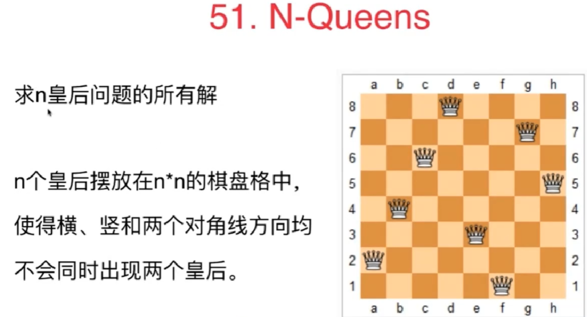 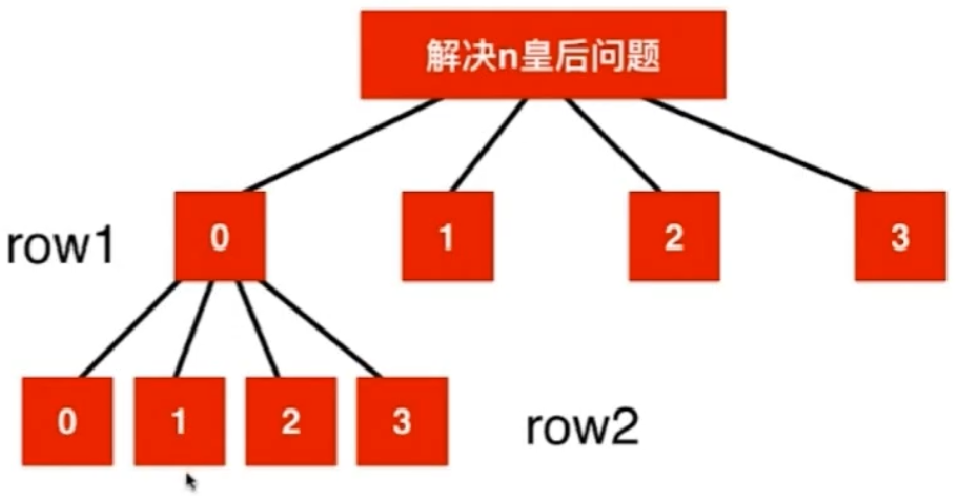
第九章、动态规划
9-1
以斐波那契为例， 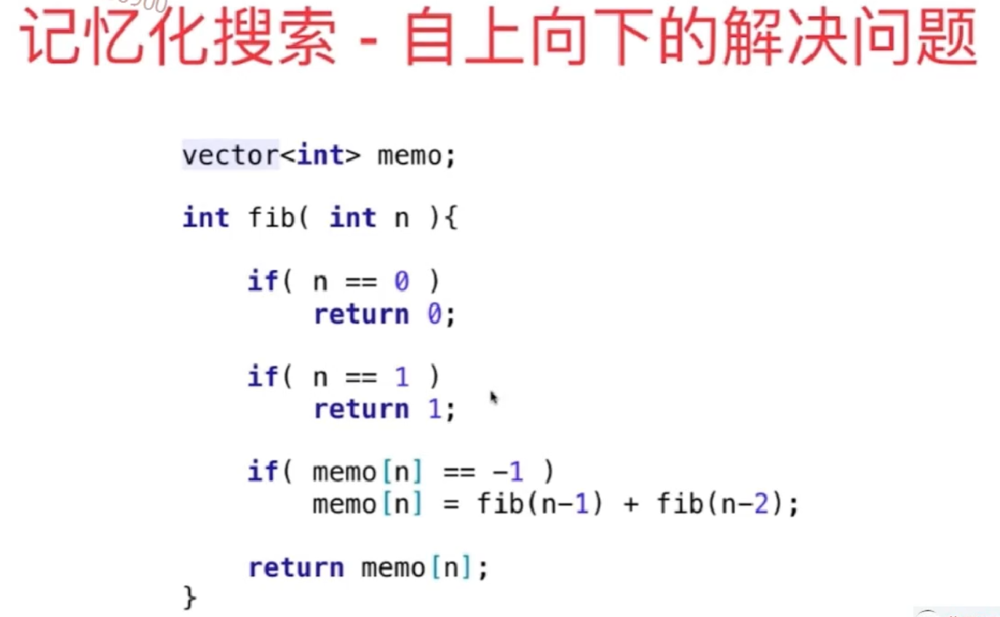
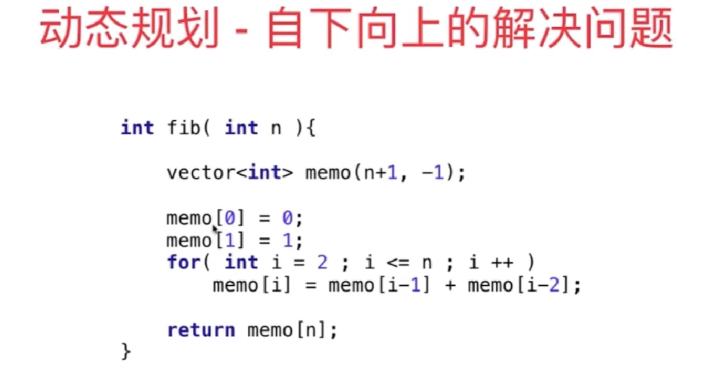
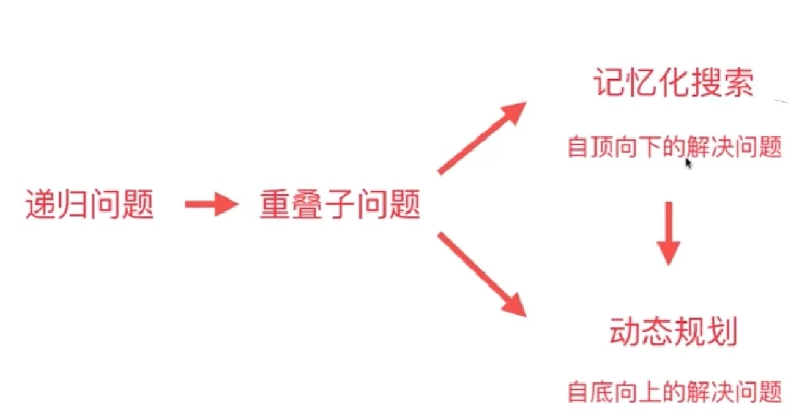
9-2
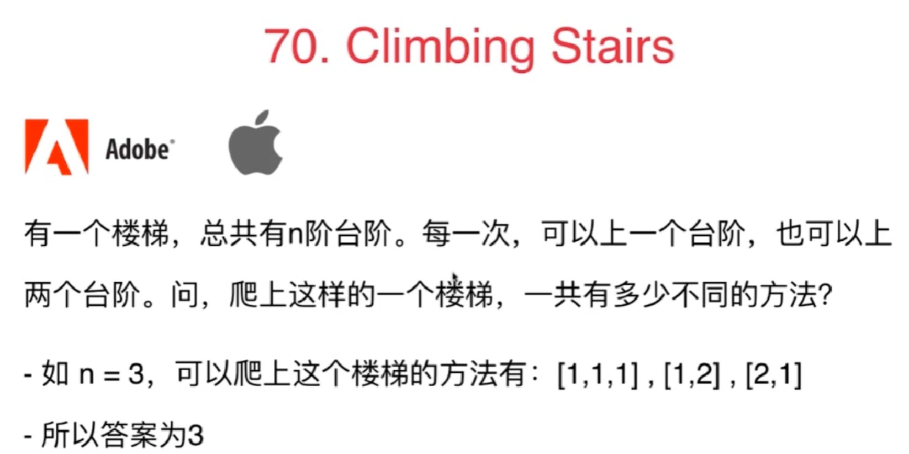 递归树： 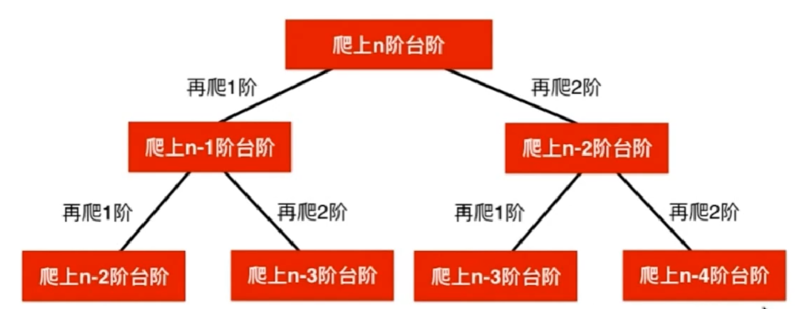
记忆化搜索：
1 2 3 4 5 6 7 8 9 10 11 12 13 14
classSolution: defclimbStairs(self, n: int) -> int: defsearch(n): if n==1: return1 if n==2: return2 if memo[n]==-1: memo[n]=search(n-1)+search(n-2) return memo[n]
memo=[-1]*(n+1) res=search(n) return res
or
1 2 3 4 5 6 7 8 9 10 11 12 13 14
classSolution: defclimbStairs(self, n: int) -> int: defsearch(n): if n==1: return1 if n==2: return2 if memo[n-1]==-1: memo[n-1]=search(n-1)+search(n-2) return memo[n-1]
memo=[-1]*n res=search(n) return res
动态规划：
1 2 3 4 5 6 7 8
classSolution: defclimbStairs(self, n: int) -> int: memo=[-1]*(n+1) memo[0]=1 memo[1]=1 for i inrange(2,n+1): memo[i]=memo[i-1]+memo[i-2] return memo[n]
课后习题 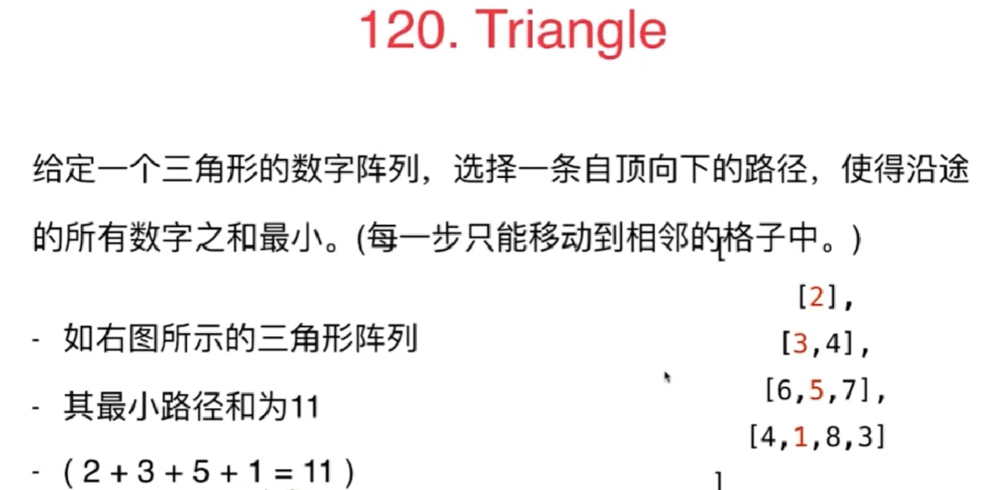 每一步只能移动到下一行中相邻的结点上。相邻的结点 在这里指的是 下标 与 上一层结点下标 相同或者等于 上一层结点下标 + 1 的两个结点。也就是说，如果正位于当前行的下标 i ，那么下一步可以移动到下一行的下标 i 或 i + 1 。
我直接暴力递归，结果超时了：
1 2 3 4 5 6 7 8
classSolution: defminimumTotal(self, triangle: List[List[int]]) -> int: defsearch(triangle,row,col): if row>=len(triangle): return0 return triangle[row][col]+min(search(triangle,row+1,col),search(triangle,row+1,col+1)) res=search(triangle,0,0) return res
改成自顶向下的记忆化搜索，过了：
1 2 3 4 5 6 7 8 9 10 11 12
classSolution: defminimumTotal(self, triangle: List[List[int]]) -> int: defsearch(triangle,row,col): if row>=len(triangle): return0 if memo[row][col]=='#': memo[row][col]=triangle[row][col]+min(search(triangle,row+1,col),search(triangle,row+1,col+1)) return memo[row][col]
memo=[['#']*len(triangle)for i inrange(len(triangle))] res=search(triangle,0,0) return res
下面是动态规划解法： 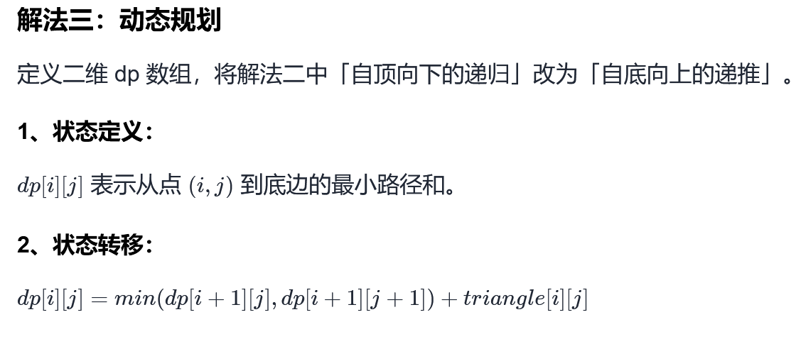
1 2 3 4 5 6 7 8 9 10
classSolution: defminimumTotal(self, triangle: List[List[int]]) -> int: #dp[i][j] 表示从点 (i, j) 到底边的最小路径和。 # 多定义一行一列（默认初始值 0），就不用判断边界了，动态规划常用方法 dp=[[0]*(len(triangle)+1) for _ inrange(len(triangle)+1)] #自下而上，从左往右，遍历三角形所有位置 for i inrange(len(triangle)-1,-1,-1):#行 for j inrange(0,i+1,1):#列 dp[i][j]=triangle[i][j]+min(dp[i+1][j],dp[i+1][j+1]) return dp[0][0]
上述动态规划空间还可以优化：
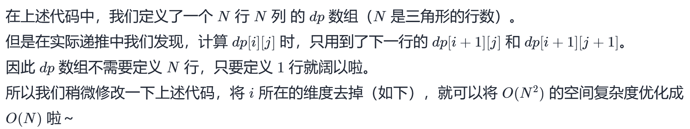
1 2 3 4 5 6 7 8
classSolution: defminimumTotal(self, triangle: List[List[int]]) -> int: ##空间优化后，dp[j] 表示从当前层第 j-1 个元素到最底层的最小路径和。 dp=[0]*(len(triangle)+1) for i inrange(len(triangle)-1,-1,-1):#行 for j inrange(0,i+1,1):#列 dp[j]=triangle[i][j]+min(dp[j],dp[j+1]) return dp[0]
classSolution: defnumSquares(self, n: int) -> int: from collections import deque deq=deque() visited=set() deq.append((n,0)) while deq: number,step=deq.popleft() targets=[number-i*i for i inrange(1,int(number**0.5)+1)] for target in targets: #由于只遍历到(number**0.5)，因此target不可能为负数，因此下面这个判断可省略 #if target<0: # break if target==0:return step+1 #if相当于剪枝 #因为之后的每一层也是从1，4，9这样遍历的，那之前的节点值相同，之后一样的遍历过程结果不也相同嘛。记录访问过的节点就类似于剪枝，保留一个记录就好。 if target notin visited: deq.append((target,step+1)) visited.add(target)
动态规划
1 2 3 4 5 6 7 8 9 10 11 12
classSolution: import math defnumSquares(self, n: int) -> int: dp=[0]*(n+1) #dp[i]表示数字i可以由dp[i]个完全平方数的和来组成 for i inrange(1,n+1): dp[i]=i j=1 while i-j*j>=0: dp[i]=min(dp[i],1+dp[i-j**2]) j+=1 return dp[n]
上面的代码超时，把j*2换成jj就过了，可能这样效率更高些：
1 2 3 4 5 6 7 8 9 10
classSolution: defnumSquares(self, n: int) -> int: dp = [0]*(n+1) for i inrange(1,n+1): dp[i]=i j = 1 while i - j*j>=0: dp[i] = min(dp[i],dp[i-j*j]+1) j += 1 return dp[n]
classSolution: defnumDecodings(self, s: str) -> int: n = len(s) #设 fi 表示字符串 s 的前 i 个字符 s[1..i] 的解码方法数 f = [1] + [0] * n for i inrange(1, n + 1): if s[i - 1] != '0': f[i] += f[i - 1] if i > 1and s[i - 2] != '0'andint(s[i-2:i]) <= 26: f[i] += f[i - 2] return f[n]
classSolution: defuniquePaths(self, m: int, n: int) -> int: #计算从[x][y]位置到达终点的不同路径总数 defmove(x,y): #找到了一条路径！ if x==m-1and y==n-1: return1 #visited[x][y]=1 s=0 for d in [[0,1],[1,0]]:#向右/下,原点在左上方 newx=x+d[0] newy=y+d[1] if0<=newx<m and0<=newy<n: if memo[newx][newy]!=0: s+=memo[newx][newy] else: s+=move(newx,newy) #visited[x][y]=0 memo[x][y]=s return memo[x][y] #visited=[[0 for _ in range(n)] for _ in range(m)] memo=[[0for _ inrange(n)] for _ inrange(m)] return move(0,0)
动态规划解法： 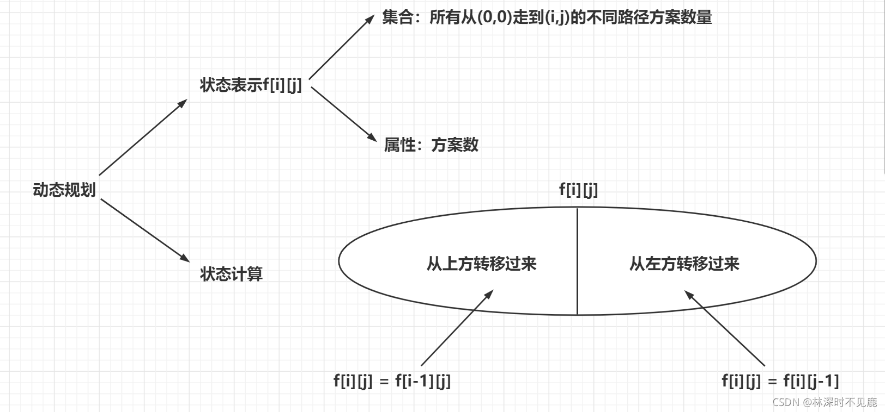
1 2 3 4 5 6 7 8 9 10 11 12 13 14
classSolution: defuniquePaths(self, m: int, n: int) -> int: #dp[i][j]表示从[0][0]到[i][j]的不同路径数 dp=[[0for _ inrange(n)] for _ inrange(m)] for i inrange(m): for j inrange(n): if i==0and j==0: dp[i][j]=1 else: if i!=0: dp[i][j]+=dp[i-1][j]#从上方转移过来 if j!=0: dp[i][j]+=dp[i][j-1]#从左方过来 return dp[m-1][n-1]
or
1 2 3 4 5 6 7 8 9 10 11 12 13
classSolution: defuniquePaths(self, m: int, n: int) -> int: #dp[i][j]表示从[0][0]到[i][j]的不同路径数 dp=[[0for _ inrange(n)] for _ inrange(m)] for i inrange(m): dp[i][0]=1 for j inrange(n): dp[0][j]=1 for i inrange(1,m): for j inrange(1,n): dp[i][j]+=dp[i-1][j]#从上方转移过来 dp[i][j]+=dp[i][j-1]#从左方过来 return dp[m-1][n-1]
时间复杂度：O(m * n)
空间复杂度：O(m * n)
可以用一维数组优化空间，没看懂，不想看：
1 2 3 4 5 6 7 8
classSolution: defuniquePaths(self, m: int, n: int) -> int: cur = [1] * n #第0行的初始值 for i inrange(1, m): for j inrange(1, n): #cur[j]原本存着i-1行列的值，现在加上第i行第j-1列的值后，cur[j]现在是当前行第i行第j列的值 cur[j] += cur[j-1] return cur[-1]
classSolution(object): defuniquePathsWithObstacles(self, obstacleGrid): n = len(obstacleGrid) m = len(obstacleGrid[0]) dp = [[0] * m for _ inrange(n)] #(0,0)这个格子可能有障碍物 dp[0][0] = 0if obstacleGrid[0][0] else1 if dp[0][0]==0: return0
#处理第一列 for i inrange(1, n): if obstacleGrid[i][0]!= 1:#不是障碍物 if dp[i - 1][0] != 0:#上面也不是障碍物 dp[i][0] = 1
#处理第一行 for j inrange(1, m): if obstacleGrid[0][j] != 1:#不是障碍物 if dp[0][j-1]!=0:#左侧也不是障碍物 dp[0][j] = 1 for i inrange(1, n): for j inrange(1, m): #如果当前格子是障碍物 if obstacleGrid[i][j] == 1: dp[i][j] = 0 #路径总数来自于上方(dp[i-1][j])和左方(dp[i][j-1]) else: dp[i][j] = dp[i - 1][j] + dp[i][j - 1] return dp[-1][-1]
9-4
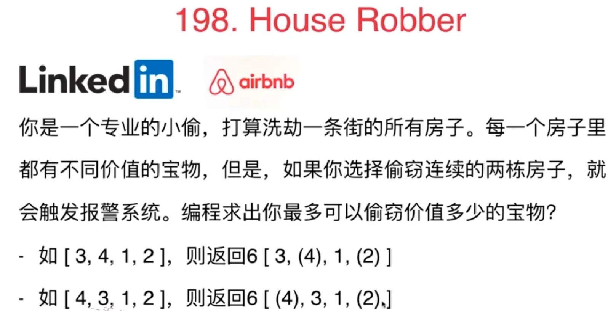 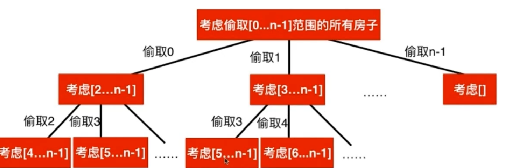 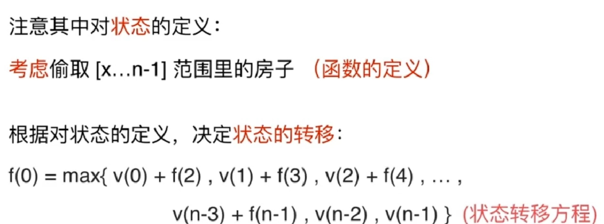
递归超时：
1 2 3 4 5 6 7 8 9 10 11
classSolution: #考虑抢劫nums[index...n]这个范围内的所有房子，index从0开始 defrob(self, nums: List[int]) -> int: deftryRob(index): if index>=len(nums): return0 res=0 for i inrange(index,len(nums)): res=max(res,nums[i]+tryRob(i+2)) return res return tryRob(0)
改成记忆化搜索：
1 2 3 4 5 6 7 8 9 10 11 12 13 14 15 16 17 18
classSolution: defrob(self, nums: List[int]) -> int: #考虑抢劫nums[index...len(nums)]这个范围内的所有房子 deftryRob(index): if index>=n: return0 if memo[index]!=-1: return memo[index] res=0 for i inrange(index,n): res=max(res,nums[i]+tryRob(i+2)) memo[index]=res return res
classSolution: defrob(self, nums: List[int]) -> int: n=len(nums) if n==0: return0 #dp[i]表示抢劫nums[i..n-1]所能获得的最大收益 dp=[-1]*(n)#不能用0初始化，因为nums是非负数组 dp[n-1]=nums[n-1]#从最后一间偷，只能偷最后一间 for i inrange(n-2,-1,-1): #求dp[i] for j inrange(i,n): if j+2>=n: dp[i]=max(dp[i],nums[j]) else: dp[i]=max(dp[i],nums[j]+dp[j+2])
return dp[0]
递归超时：
1 2 3 4 5 6 7 8 9 10 11
classSolution: #考虑抢劫nums[0...index]这个范围内的所有房子，index从0开始 defrob(self, nums: List[int]) -> int: deftryRob(index): if index<0: return0 res=0 for i inrange(index,-1,-1): res=max(res,nums[i]+tryRob(i-2)) return res return tryRob(len(nums)-1)
改成记忆化搜索：
1 2 3 4 5 6 7 8 9 10 11 12 13 14 15
classSolution: #考虑抢劫nums[0...index]这个范围内的所有房子，index从0开始 defrob(self, nums: List[int]) -> int: deftryRob(index): if index<0: return0 if memo[index]!=-1: return memo[index] res=0 for i inrange(index,-1,-1): res=max(res,nums[i]+tryRob(i-2)) memo[index]=res return res memo=[-1]*len(nums) return tryRob(len(nums)-1)
for i inrange(3,n): dp1[i]=max(dp1[i-1],dp1[i-2]+nums[i-1]) #不偷第一间:[2...n] dp2=[0]*(n+1) dp2[2]=nums[1] dp2[3]=max(nums[1],nums[2]) for i inrange(4,n+1): dp2[i]=max(dp2[i-1],dp2[i-2]+nums[i-1]) returnmax(dp1[n-1],dp2[n])
classSolution: defwiggleMaxLength(self, nums: List[int]) -> int: n=len(nums) if n==1or (n==2and nums[0]!=nums[1]): return n #dp[i][0]表示以nums[i]结尾且当前位置为降序的最长摆动序列的长度,dp[i][1]表示以nums[i]结尾且当前位置为升序的最长摆动序列的长度 dp = [[1for i inrange(2)] for j inrange(n)]
res=[] res.append(dp[0][0]) res.append(dp[0][1])
for i inrange(1,n): for j inrange(0,i): #以nums[i]结尾且当前位置为升序 if nums[i] > nums[j]: #到nums[i]是升序了，那么前面必然得是降序的，因此考虑的是dp[j][0] dp[i][1] = max(dp[i][1],dp[j][0]+1) #以nums[i]结尾且当前位置为降序 elif nums[i] < nums[j]: #到nums[i]是升序了，那么前面必然得是降序的，因此考虑的是dp[j][1] dp[i][0] = max(dp[i][0],dp[j][1]+1) #nums[i]=nums[j]，此时nums[i]不可能加在nums[j]后面 else: continue res.append(dp[i][0]) res.append(dp[i][1])
returnmax(res)
优化
up结尾的摆动序列是由最长的以down结尾的序列转化过来
down结尾的摆动序列是由最长的以up结尾的序列转化过来
下面这种方法up和down分别记录了末尾up结尾的最长摆动序列和down结尾的最长摆动序列
1 2 3 4 5 6 7 8 9 10 11 12 13 14 15
classSolution: defwiggleMaxLength(self, nums: List[int]) -> int: n=len(nums) if n<2: return n up=[nums[0]] down=[nums[0]] for i inrange(1,n): if nums[i]>nums[i-1]: up=down+[nums[i]] elif nums[i]<nums[i-1]: down=up+[nums[i]] else: continue returnmax(len(up),len(down))
9-9
更多动态规划的问题。
最长公共子序列(LCS)
dijkstra 单源最短路径算法也是动态规划
第十章：贪心算法
10-1
1 2 3 4 5 6 7 8 9 10 11 12 13 14
classSolution: deffindContentChildren(self, g: List[int], s: List[int]) -> int: g=sorted(g,reverse=True) s=sorted(s,reverse=True) res=0 si,gi=0,0#si初始指向最大的饼干，gi初始指向最贪心的小朋友 while gi <len(g) and si<len(s): if s[si]>=g[gi]: res+=1 si+=1 gi+=1 else:#无法满足当前最贪心的小朋友，于是尝试满足次贪心小朋友 gi+=1 return res
课后习题
这解法有双指针那味了。。。
1 2 3 4 5 6 7 8 9 10
classSolution: defisSubsequence(self, s: str, t: str) -> bool: si,ti=0,0 while si<len(s) and ti<len(t): if s[si]==t[ti]: si+=1 ti+=1 else: ti+=1 return si==len(s)
10-2
贪心算法和动态规划的关系。
使用动态规划，类似最长上升子序列：
超时：
1 2 3 4 5 6 7 8 9 10 11 12 13
classSolution: deferaseOverlapIntervals(self, intervals: List[List[int]]) -> int: intervals=sorted(intervals) #print(intervals) n=len(intervals) dp=[1for _ inrange(n)] #dp[0]=1#单个是1 for i inrange(1,n): #求dp[i] for j inrange(0,i): if intervals[j][1]<=intervals[i][0]: dp[i]=max(dp[i],1+dp[j]) return n-max(dp)
AC：
1 2 3 4 5 6 7 8 9 10 11 12 13 14
classSolution: deferaseOverlapIntervals(self, intervals: List[List[int]]) -> int: intervals.sort(key=lambda x:x[0]) print(intervals) n=len(intervals) dp=[1for _ inrange(n)] #dp[0]=1#单个是1 for i inrange(1,n): #求dp[i] for j inrange(i-1,-1,-1): if intervals[j][1]<=intervals[i][0]: dp[i]=max(dp[i],1+dp[j]) break return n-max(dp)
官方也超时：
1 2 3 4 5 6 7 8 9 10 11 12 13
classSolution: deferaseOverlapIntervals(self, intervals: List[List[int]]) -> int: ifnot intervals: return0 intervals.sort() n = len(intervals) f = [1]
for i inrange(1, n): f.append(max((f[j] for j inrange(i) if intervals[j][1] <= intervals[i][0]), default=0) + 1)
return n - max(f)
使用贪心算法
1 2 3 4 5 6 7 8 9 10 11 12 13 14 15
classSolution: deferaseOverlapIntervals(self, intervals: List[List[int]]) -> int: ifnot intervals: return0 intervals.sort(key=lambda x:x[1]) print(intervals) n=len(intervals) res=1 pre=0 for i inrange(1,n): if intervals[pre][1]<=intervals[i][0]: res+=1 pre=i return n-res